Publié le 25/01/2023
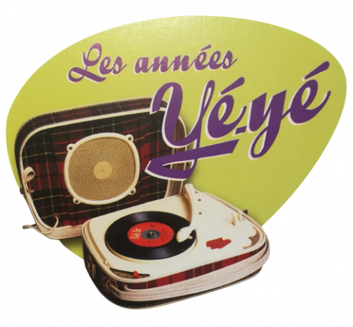
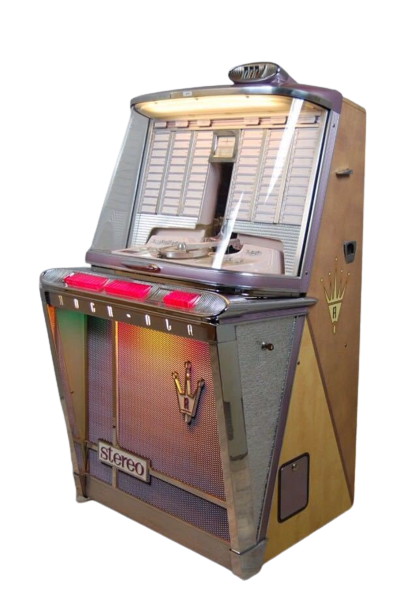
Le juke-Box est désormais présent dans une majorité de cafés.
Le succès du 45 tours vinyle a ouvert la voie à ces machines
pouvant contenir jusqu’à 400 disques. Pour 20 centimes, vous pouvez désormais écouter votre chanson préférée.
- Les disques 45 tours qui alimentent ces machines n'ont pas de pochettes -
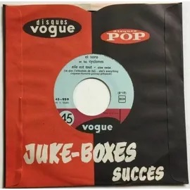
L’émission Age Tendre et Têtes de Bois, créée l’année précédente par Albert Raisner accueille les nouvelles idoles de la chanson. À l'origine, "Age tendre et têtes de bois" est une chanson composée et interprétée par Gilbert Bécaud en 1960. Écrite avec le parolier Louis Amade, elle dépeint avec nostalgie et tendresse la jeunesse de l'époque, ses amours maladroites, ses blousons et ses virées au cinéma pour boire un Coca-Cola. Inspirée directement par le titre de Bécaud, l'émission devient le rendez-vous télévisé incontournable de la jeunesse sur la RTF puis l'ORTF.
Le Concours Eurovision de la chanson qui est la plus grande compétition musicale télévisée en direct au monde,
est organisée chaque année par l'Union européenne de radio-télévision (UER) depuis sa création en 1956.
En cette année 1962, la France remporte le Grand Prix avec
"Un premier amour" interprétée par Isabelle Aubret.
Edith Piaf épouse Théo Sarapo à la mairie du XVIe arrondissement.
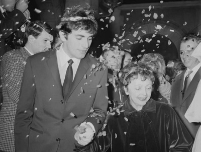
La majorité des foyers possèdent un Teppaz, disponible en près de 25 coloris,
pesant six kilos environ et pouvant, depuis trois ans, être équipés de piles.
il est présent dans les surprises-parties.
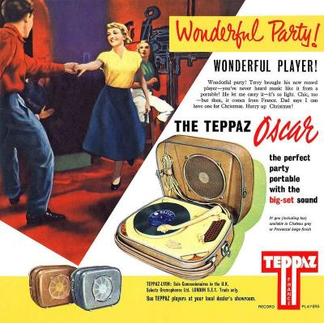
Quelques danses séduisent les garçons et les filles en vacances :
le Chicken, le Flop, le Mashed Potatoes, le Madison...
Ces rythmes remplaceront-ils le Twist ?
Claude Moine, plus connu sous le pseudonyme d’Eddy Mitchell est appelé sous les drapeaux. Son groupe Les Chaussettes Noires survivra-t-il à cette parenthèse ?
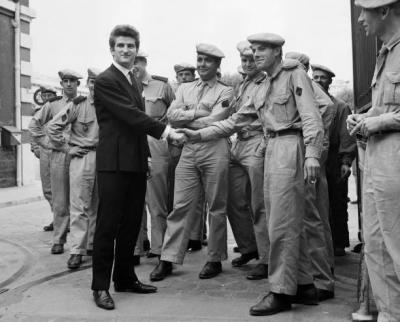
Inauguration du "Tremplin" du Golf Drouot, où de jeunes artistes, inconnus du public, se produiront chaque vendredi.
Pour cet événement, Henry Leproux directeur de l’établissement, a organisé l’élection de « Miss Twist ».
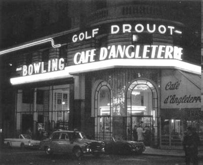
On dénombre désormais, en France, une guitare pour 450 habitants.
Les amplificateurs connaissent, eux aussi, un succès sans précédent.
Les jeunes, qui rêvent de fortune et de gloire comme Johnnny et Sylvie, prennent des cours chez l’un des 3 000 professeurs aujourd’hui recensés.
Chaque jeudi, chez Pathé Marconi, on fait passer des auditions à ces artistes en herbe.
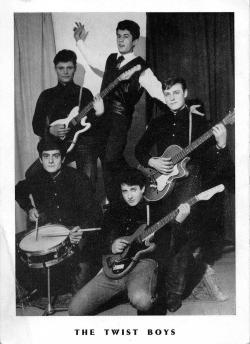
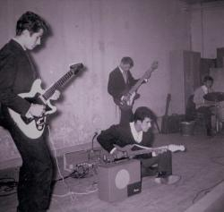
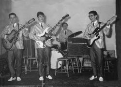
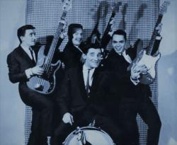
Le magnétophone entre dans les familles.
Il est équipé de bandes magnétiques dont la durée peut atteindre 30 minutes.
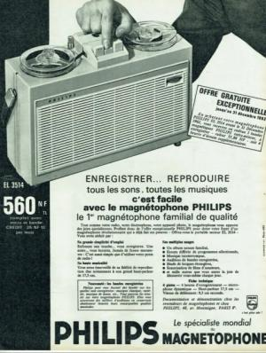
L'émission Interville arrive en France.
Ce concept de jeu, opposant deux villes dans une série d'épreuves culturelles et sportives, est né en Italie et baptisé Campanile Sera par la R.A.I.
Les animateurs en France sont Guy Lux, Roger Couderc, Simone Garnier et Léon Zitrone.
Une surprise au hit-parade de Salut les Copains, Sœur Sourire est numéro 1 avec "Dominique". Derrière ce pseudonyme se cache Jeanine Deckers,
une religieuse Belge. Le disque, sorti aux Etats-Unis, entre dans le Bilbord, le classement des ventes.
Ed Sullivan, le plus célèbre animateur de la télévision américaine invite Sœur Sourire à participer à son émission.
Les jeunes s’arrachent « SLC » !
Soucieux de donner un prolongement à l’émission quotidienne d’Europe n°1,
Daniel Filipacchi et Frank Ténot ont imaginé un magazine mensuel proposant
des nouvelles des vedettes préférées des jeunes.
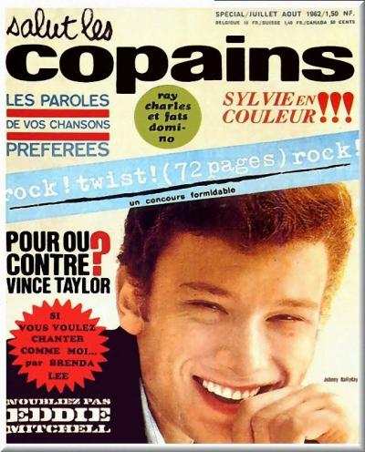
Annie Chancel passe des marchés au hit-parade
et devient Sheila. son premier 45 tours sort le 13 novembre 1962.
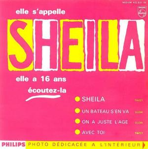
Sortie du long métrage d'animation "Le crabe aux pinces d'or",
d'après Hergé, une coproduction Belvision Télé-Hachette et c'est un succès international
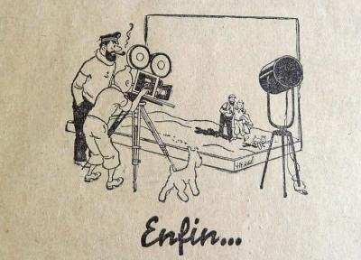
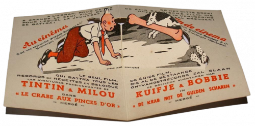
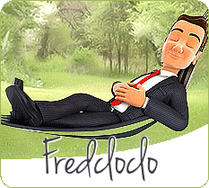
Les commentaires sont soumis à modération et doivent être approuvés avant publication.